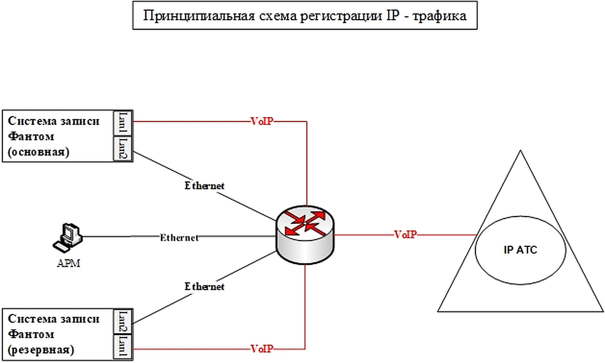
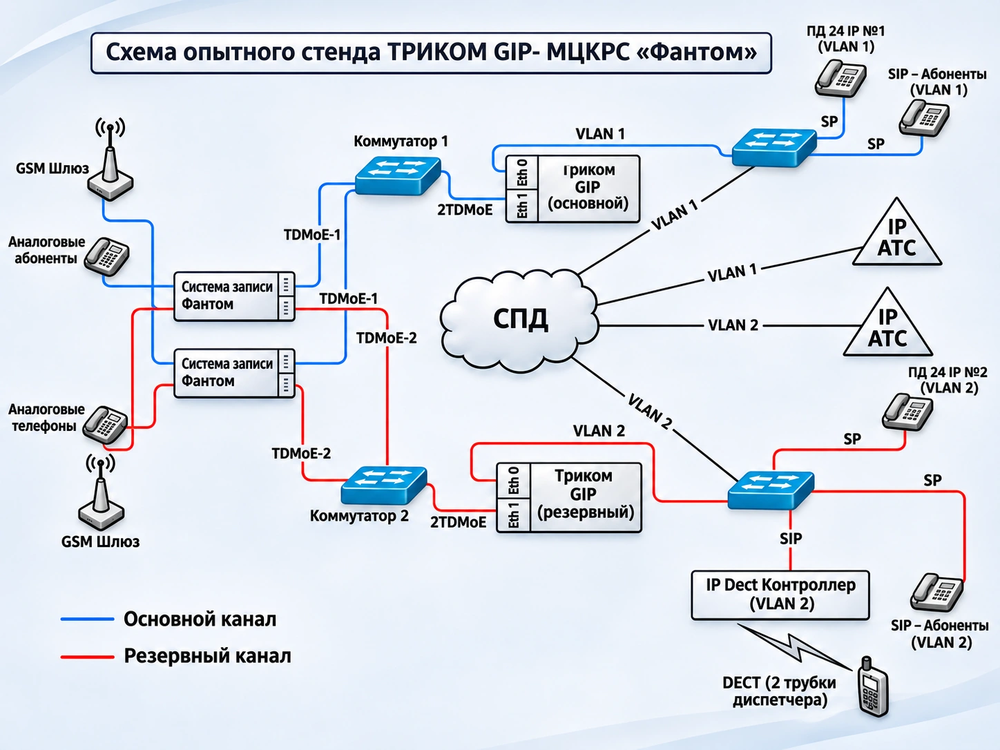
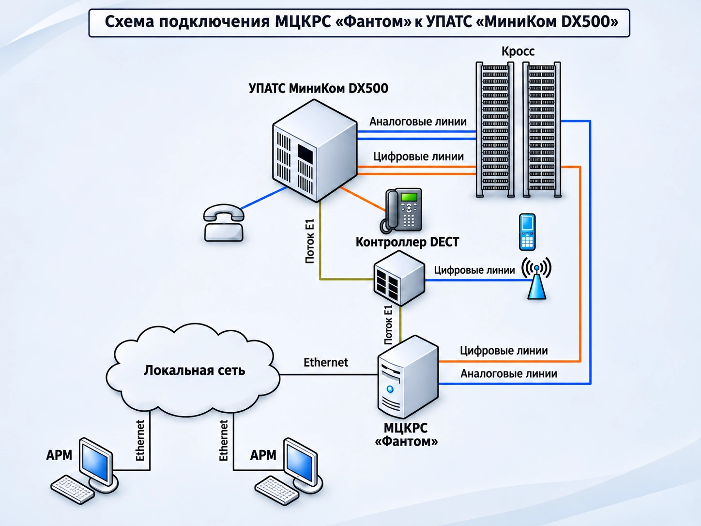
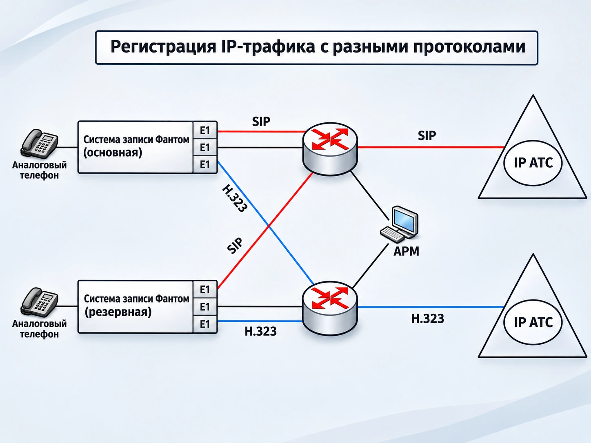

Схемы подключения МЦКРС «Фантом»
Схемы подключения систем записи к IP‑телефонии и АТС
Четыре схемы подключения систем записи «Фантом» к IP‑телефонии и АТС. Схемы показывают конкретные архитектурные примеры и требуют проверки применимости для новой конфигурации.
Схема 1 из 4
1. Принципиальная схема регистрации IP‑трафика
Схема показывает основную и резервную системы записи «Фантом», АРМ и IP‑АТС, связанные через сетевую инфраструктуру. На рисунке различаются обозначения Ethernet и VoIP.

Опытный стенд
2. Опытный стенд ТРИКОМ GIP – МЦКРС «Фантом»
На схеме опытного стенда присутствуют два устройства записи «Фантом», основной и резервный ТРИКОМ GIP, коммутаторы, СПД и разные типы абонентских устройств. Легенда рисунка различает основной и резервный каналы.

Схема 3 из 4
3. Подключение к УПАТС «МиниКом DX500»
Схема описывает пример подключения МЦКРС «Фантом» к УПАТС «МиниКом DX500» с использованием аналоговых и цифровых линий, потока E1 и Ethernet. АРМ связаны с системой через локальную сеть.

Схема 4 из 4
4. Регистрация IP‑трафика с разными протоколами
В этой схеме основная и резервная системы записи подключены к инфраструктуре двух IP‑АТС. На линиях указаны SIP и H.323; рядом с системами записи также изображены аналоговые телефоны.

Перед проектированием
Что требуется уточнить перед проектированием
Одинаковый тип телефонии не означает одинаковую схему подключения. Конкретная архитектура определяется АТС, интерфейсами, сетевой инфраструктурой и требованиями проекта.
Подбор подключения
Нужна схема для вашей АТС?
Укажите модель и версию АТС, типы линий, количество каналов и сетевую топологию. МДИС поможет определить применимый вариант подключения.
Обсудить подключениеКнопка откроет почтовое приложение с заполненным черновиком письма.